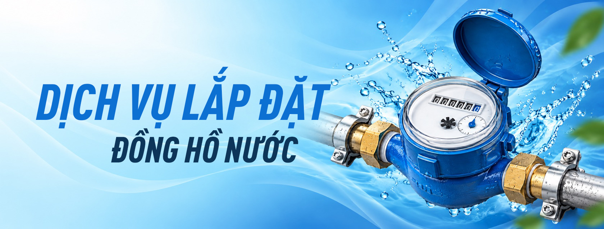

Lắp đặt đồng hồ nước
Đăng ký cấp nước mới cho hộ gia đình và cho công trình, dự án.
Xem chi tiết dịch vụ
Đăng ký cấp nước mới cho hộ gia đình và cho công trình, dự án.
Xem chi tiết dịch vụXử lý sự cố đường ống, đồng hồ nước và các yêu cầu nâng dời.
Xem chi tiết dịch vụ